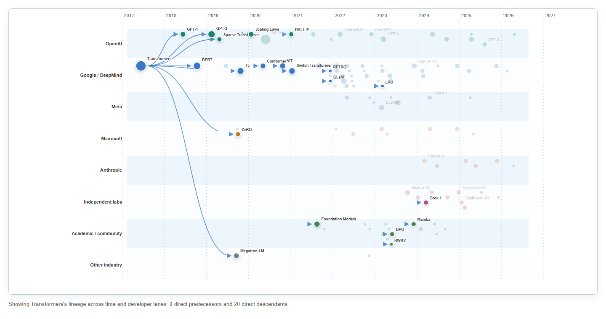

The source repository describes the project as an interactive visualization of LLM development
timelines using a Directed Acyclic Graph (DAG) representation. Its 107 nodes cover models and
research contributions from 2017 through 2026, while 153 directed links encode curated parent-child
influence. Organization logos identify developers and year guides provide temporal context. The source
also notes that some relationships involving closed models are inferred from public papers and
announcements.
Part 2. Intended Message, Audience, and Tasks
Intended message
LLM development is both a timeline and a lineage: later systems inherit ideas from earlier architectures, training methods, and model families. The repository's DAG is intended to communicate these parent-child relationships and their release chronology.
Audience
Students, researchers, developers, and technically interested readers who want an overview of major LLM developments without reading every cited paper.
Primary tasks
Locate a model, identify its predecessors and descendants, compare descendant paths across developers, and understand when model families and organizations evolved.
Part 3. Critique of the Original
Strengths
Relationships are central. The node-link idiom communicates that model development is cumulative rather than a list of unrelated releases. Selecting a node also supports details on demand.
The presentation encourages exploration. Glowing nodes, recognizable logos, animated movement, and citations make individual models engaging and give interested viewers paths to original sources.
Weaknesses and opportunities for improvement
The DAG becomes difficult to read at scale. The original theoretically supports parent-child tracing, but 107 clustered nodes and 153 long, crossing links become entangled. The viewer can see that a network exists without being able to follow many descendant paths efficiently.
The stated timeline is visually hindered. Year guides are present, but the force layout and dense connections compete with chronological position. Release intervals, periods of acceleration, and parallel development are therefore difficult to compare.
Developer-specific evolution is difficult to compare. Logos identify organizations, but they do not create stable visual groups. Organization lanes and consistent color can show how descendants emerge within and across companies while a selected model retains its directed connections.
Part 4. D3 Redesign
The redesign prioritizes the source project's timeline-and-lineage goal. Publication date determines
horizontal position, developer group determines vertical lane and color, and direct-descendant count
determines point size. Selecting a model animates directed arrows from predecessor to descendant,
pulses its direct descendants, and fades unrelated nodes. Search and organization filters support
focused lookup without changing the underlying data.
Color: organization group
Size: number of direct descendants
A direct descendant is an outgoing connection from a node in the supplied lineage data.
Selection guide: arrows draw from predecessor to descendant, pulsing points are direct
descendants, horizontal movement shows release time, and the destination lane identifies the developer.
Part 5. Explanation of Redesign Decisions
1. From a global node-link graph to organization swimlanes
I replaced the original force-directed DAG with horizontal swimlanes organized by developer group. The original does encode parent-child connections, so it theoretically supports tracing descendants. At the scale of 107 nodes and 153 links, however, many nodes cluster and the curved links cross or overlap. The display communicates that the ecosystem is connected, but individual descendant paths become difficult to interpret. In the redesign, every model remains a node while its vertical position has a stable meaning: the organization or developer associated with it. This makes it possible to compare descendants within one company and notice lineage that crosses developer lanes. Alternating lane backgrounds and labels support scanning. Links are hidden in the overview and appear only after a model is selected, preserving the directed relationship task without displaying the entire entangled network simultaneously. Animated arrow drawing makes source-to-descendant direction explicit, while descendant pulses direct attention to the endpoints. The redesign therefore gives up the original's immediate picture of total network complexity in exchange for a more readable account of model evolution. It is especially effective when the task is to identify a model's predecessors, direct descendants, and developer context.
2. Point encodings for organization and direct influence
I treated each model as a scatterplot point and assigned two documented visual channels to it. Color represents the broad organization group, which duplicates the lane position and helps viewers follow an organization across a dense period. Point area represents the number of direct descendants in the supplied lineage graph: the count of outgoing links from that model or research contribution. A square-root radius scale maps zero descendants to the smallest circles and the dataset maximum of twenty descendants to the largest circles. The size legend shows reference values of zero, five, and twenty so that viewers can interpret area instead of assuming that a large point means parameter count, training compute, popularity, or benchmark performance. This encoding makes highly connected contributions such as Transformers and GPT-3 visually salient while retaining smaller nodes for less-connected releases. It addresses the original visualization's ambiguous glowing node sizes and indirect organization coding. Direct-descendant count is still source-dependent and does not measure total historical importance, so the legend and detail panel state the definition explicitly rather than presenting size as an objective impact score.
3. Publication time as a primary quantitative attribute
I made publication date the horizontal position of every point on one continuous scale from 2017 through 2026. This responds directly to the repository's stated goal of visualizing LLM development timelines. The original contains year guides and temporal constraints, but its force layout must also separate nodes and arrange parent-child links. When many releases occupy the same period, clustering and entangled curves weaken the timeline: viewers can recognize a general direction of progress but cannot easily compare intervals or parallel activity. In the redesign, annual gridlines create one shared reference across every developer lane. Models released close together appear close together, while gaps represent periods with fewer recorded contributions. The lanes reveal when each organization became active, when releases accelerated, and how selected descendants progressed across time and company boundaries. Tooltips and the detail panel retain exact dates for lookup. Time is therefore promoted from contextual scaffolding to the primary quantitative axis. Publication date still represents public release rather than the beginning or duration of research, and the 2017-2026 range reflects the supplied dataset rather than a complete history of language modeling.
4. Original versus redesign
The original wins as an interactive and visually interesting exploration tool. Its animation, glowing nodes, logos, zooming, and persistent curves create a strong sense of a living research ecosystem. It invites discovery and makes the complexity of LLM development immediately memorable. However, that same density works against the repository's practical goal of communicating development timelines and model lineage. With many nodes clustered together and links entangled across the canvas, a viewer may struggle to determine when a model appeared, which developer produced it, and where its descendants lead. The redesign is less dramatic but more informative for those questions. Horizontal position provides a readable chronology; vertical lanes and color group models by developer; point size summarizes direct-descendant count; and animated selection isolates the relevant directed links. This makes time-series evolution and developer-specific descendant paths easier to interpret while restoring some interactive interest. Broad organization categories still simplify collaborations. The redesign therefore shifts priority from spectacle and whole-network atmosphere toward the actual analytical goal: understanding how influential models evolved over time and across organizations.

Redesigned D3 visualization with a selected lineage. Publication time runs from left to right and
developer groups form horizontal lanes. Author-generated from the cited LLM Family Tree graph data.
Data Sources and References
Janes, J. LLM Family Tree. Original interactive visualization.
The organization groups and direct-descendant counts are derived from the source graph for this redesign.
Lineage links represent the source author's curated interpretation and may include inferred relationships.